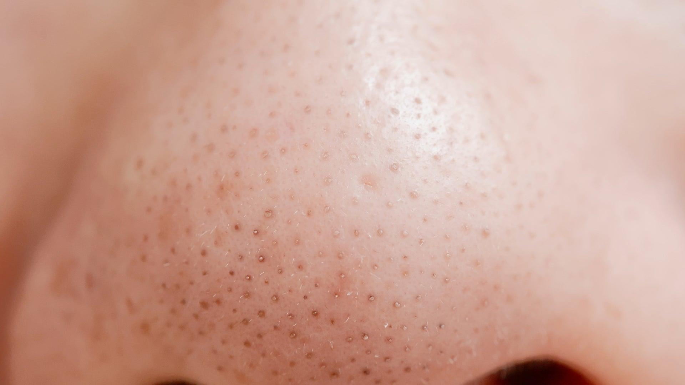

Nose pore cleansing strips do work—but probably not the way you think.
They can instantly remove some oil, dead skin, and surface debris from your pores, which is why the strip looks so satisfying after you peel it off. But they don’t permanently remove blackheads, shrink pores, or stop them from coming back. Dermatologists generally view them as a temporary cosmetic fix rather than a long-term skincare solution.
What’s Actually Happening?
Pore strips are coated with a strong adhesive. When applied to damp skin and allowed to dry, the adhesive bonds to:
- excess oil (sebum)
- dead skin cells
- oxidized debris at the opening of pores
- some blackheads and sebaceous filaments
When you peel the strip away, it removes whatever is attached to the surface.
That’s why your nose often feels smoother immediately afterward. But the deeper portion of the pore remains unchanged, and your skin naturally begins producing oil again almost immediately.
The Biggest Myth: “They Empty Your Pores”
Not exactly.
Many of the tiny gray or white spikes you see on the strip aren’t entire blackheads.
They’re often sebaceous filaments—normal collections of oil that naturally line your pores. Everyone has them, especially on the nose.
Removing them makes pores look cleaner for a day or two, but because they’re part of normal skin function, they refill naturally.

Do They Shrink Pores?
No.
Pore size is largely determined by genetics, age, skin type, and collagen levels.
What pore strips can do is temporarily make pores appear smaller by removing the dark material sitting at their opening.
Once oil builds up again, the pores usually look exactly as they did before.
Can They Damage Your Skin?
Occasionally—especially if they’re overused.
Because the adhesive sticks to both debris and your skin’s surface, frequent use may lead to:
- redness
- irritation
- dryness
- broken capillaries on sensitive skin
- damage to the skin barrier
They’re also not recommended if you’re using prescription retinoids, have eczema, rosacea, or have recently had a chemical peel.
What Actually Works Better?
If your goal is fewer blackheads—not just temporarily cleaner-looking pores—dermatologists usually recommend ingredients that treat the cause rather than pulling material out mechanically.
The gold standard is salicylic acid (BHA).
Because it’s oil-soluble, it can penetrate into pores and help dissolve the oil and dead skin cells that create blackheads in the first place.
Other helpful options include:
- gentle retinoids
- clay masks (occasionally)
- consistent cleansing
- non-comedogenic moisturizers
Unlike pore strips, these approaches improve the appearance of pores over time instead of just for a few hours.
Pore Strip vs. Salicylic Acid
| Pore Strip | Salicylic Acid |
|---|---|
| Removes surface debris | Dissolves oil inside pores |
| Instant results | Gradual improvement |
| Lasts 1–3 days | Long-term prevention |
| Cosmetic fix | Treats the cause |
So…Are Nose Pore Cleansing Strips Worth It?
Yes—if you know what you’re getting.
They’re great if you:
- want an instant smoother-looking nose
- have an event coming up
- enjoy the satisfying peel
They’re less useful if you’re hoping to permanently:
- eliminate blackheads
- shrink pores
- stop oil production
Think of them like lint rollers for your pores: they pick up what’s sitting on the surface, but they don’t stop new buildup from appearing.
The Bottom Line
Nose pore cleansing strips aren’t a scam—but they’re also not the miracle treatment their marketing sometimes suggests.
They provide temporary cosmetic improvement, not a cure for blackheads or enlarged pores. For healthier-looking skin in the long run, consistent use of ingredients like salicylic acid and retinoids will do far more than an occasional peel-off strip.
Truth Behind Beauty Verdict: ⚠️ Partly True
Pore strips do exactly one thing well: they lift oil and debris off the opening of the pore, and your nose looks better for a day or two. That part is real. The claims that stretch past it—emptied pores, shrunken pores, blackheads gone for good—describe a job the adhesive cannot do. Buy them as a same-day cosmetic tool, not as blackhead treatment.